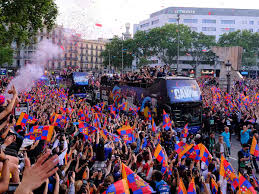

Historia
El FC Barcelona, fundado en 1899, es uno de los clubes más emblemáticos de España. Ha competido siempre en Primera División y es conocido por su cantera "La Masia".

Página oficial FC Barcelona | Instagram oficial FC Barcelona | Página X oficial FC Barcelona
Club histórico del fútbol español
El FC Barcelona, fundado en 1899, es uno de los clubes más emblemáticos de España. Ha competido siempre en Primera División y es conocido por su cantera "La Masia".
El Spotify Camp Nou es un estadio nuevo aun construyéndose.

El Barcelona es seguido por millones de aficionados en todo el mundo.
Web oficial: www.FC Barcelona.com
1. ¿En qué año se fundó el FC Barcelona?
19022. ¿Cómo se llama la cantera del Barça?
La Masia3. ¿Quién es el máximo goleador histórico del club?
Ronaldinho